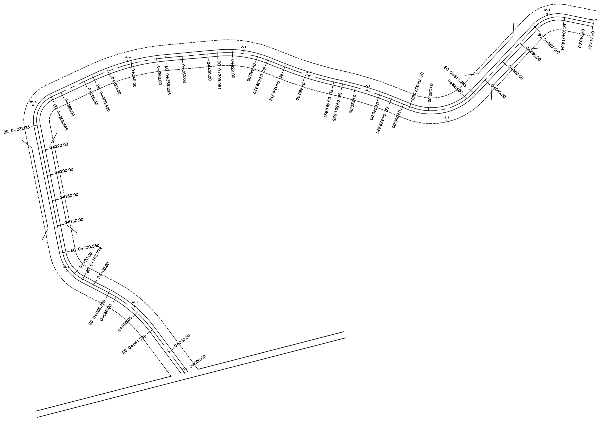

Topographic, bridge site and road alignment survey
During an undergraduate survey camp, I worked on field data collection and Civil 3D drawings for a topographic map, a bridge site and a road alignment.
We established a closed traverse using a total station, transferred benchmark elevations by fly leveling, and surveyed surrounding features. The resulting topographic map used a 1:500 scale and 1 m contour intervals.

For the bridge site survey, we selected the bridge axis, measured the span by triangulation, and surveyed longitudinal and cross sections of the river. We also marked the high flood level on the cross sections.
For the road alignment, we set out the centerline and horizontal curves, collected longitudinal and cross sections, and prepared the road profile and design grade line in Civil 3D.
My work included total station operation, field records, traverse calculations and drawing preparation.
Additional figures

Bridge site and road alignment drawings
The drawings below show the bridge site contours and triangulation stations, road alignment with horizontal curves, and longitudinal profile with design grades.


